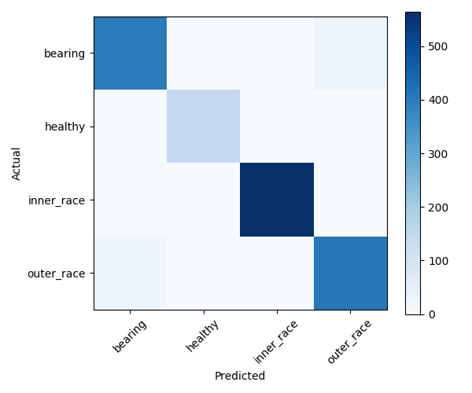
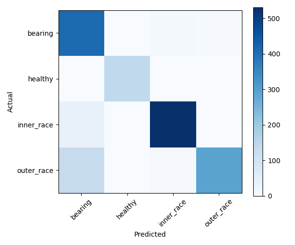
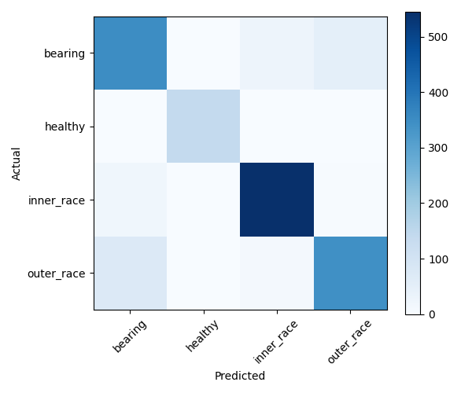

| Model | Accuracy | Classification report | Confusion matrix |
|---|
| rf |
0.9648
| precision recall f1-score support
bearing 0.94 0.93 0.94 426
healthy 1.00 1.00 1.00 141
inner_race 0.99 0.99 0.99 570
outer_race 0.94 0.95 0.95 427
accuracy 0.96 1564
macro avg 0.97 0.97 0.97 1564
weighted avg 0.96 0.96 0.96 1564
|
 |
| svm |
0.8779
| precision recall f1-score support
bearing 0.71 0.96 0.82 426
healthy 1.00 1.00 1.00 141
inner_race 0.97 0.93 0.95 570
outer_race 0.98 0.68 0.81 427
accuracy 0.88 1564
macro avg 0.91 0.89 0.89 1564
weighted avg 0.90 0.88 0.88 1564
|
 |
| knn |
0.8811
| precision recall f1-score support
bearing 0.79 0.82 0.80 426
healthy 1.00 0.99 1.00 141
inner_race 0.93 0.96 0.94 570
outer_race 0.87 0.80 0.83 427
accuracy 0.88 1564
macro avg 0.90 0.89 0.89 1564
weighted avg 0.88 0.88 0.88 1564
|
 |
| stacking |
0.9661
| precision recall f1-score support
bearing 0.94 0.93 0.94 426
healthy 1.00 1.00 1.00 141
inner_race 1.00 0.99 0.99 570
outer_race 0.94 0.96 0.95 427
accuracy 0.97 1564
macro avg 0.97 0.97 0.97 1564
weighted avg 0.97 0.97 0.97 1564
|
|